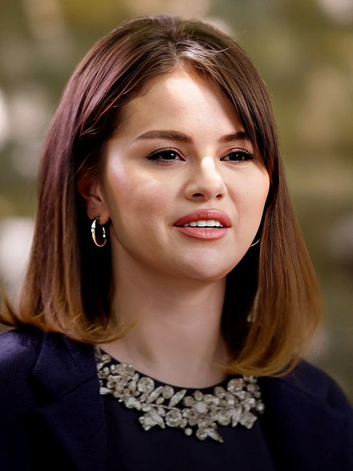

Selena Marie Gomez (/səˈliːnə ˈɡoʊmɛz/ sə-LEE-nə GOH-mez; born July 22, 1992) is an American singer, songwriter, and actress. Gomez began her acting career on the children's television series Barney & Friends (2002–2004). In her teenage years, she rose to prominence for her lead role as Alex Russo in the Disney Channel television series Wizards of Waverly Place (2007–2012).
Alongside her television career, Gomez appeared in the films Another Cinderella Story (2008), Princess Protection Program (2009), Wizards of Waverly Place: The Movie (2009), Ramona and Beezus (2010), Monte Carlo (2011), Spring Breakers (2012), Getaway (2013), The Fundamentals of Caring (2016), The Dead Don't Die (2019), and A Rainy Day in New York (2019). She voiced the character Mavis in the Hotel Transylvania film franchise (2012–2022). Gomez executive produced the Netflix television series 13 Reasons Why (2017–2020) and Living Undocumented (2019) through her production company, July Moonhead Productions. She also executive produces and stars in the HBO Max cooking series Selena + Chef (2020–present) and the Hulu mystery-comedy series Only Murders in the Building (2021–present). The latter earned Gomez critical praise, and a nomination for Best Actress in a Comedy series at the Critics' Choice Television Awards.